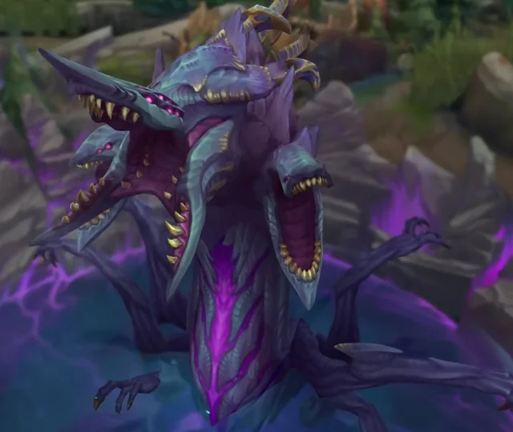
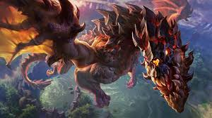
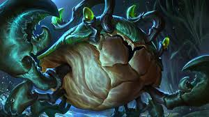
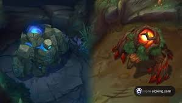

Historia
League of Legends (LoL) es un juego multijugador de arena de batalla en línea (MOBA) desarrollado por Riot Games. Fue lanzado en 2009 y está ambientado en el universo de Runaterra, un mundo lleno de magia, conflictos y personajes únicos.
Roles
En League of Legends, los jugadores pueden elegir entre cinco roles principales, en los que tendran que elegir uno de los más de 150 campeones:
- Top: Línea superior con tanques y luchadores.
- Jungla: Soporte entre líneas.
- Mid: Magos y asesinos en la línea central.
- Adc: Dañadores físicos en línea inferior.
 Soporte: Protección para el equipo.
Soporte: Protección para el equipo.
Monstruos de la Jungla
*1 *2
- Barón Nashor:Barón Nashor es el monstruo neutral mas poderoso del mapa, matar al Baron da el buffo Mano del Barón. Durante 3 minutos da al jugador AD y AP y ademas mejora a los subditos
- Dragones: Son monstruos que dan buffos a todo el equipo dependiendo del tipo que sea el dragon.
- Escurridizo: Un cangrejo modificado que da vision y velocidad en un area concreta.
- Azul y Rojo: Monstruos que dan un buffo dependiendo de si matas al azul(da regeneracion de maná) o al rojo (regeneracion de vida, slow y daño verdadero).
3.4.
Arcane

Arcane cuenta la historia del origen de dos campeonas de League of Legends, que casualmente son hermanas . Jinx, también conocida como Powder, y Vi se encuentran en bandos rivales de una guerra en ciernes entre la ciudad de Piltover y su oprimida zona marginal, Zaun.
Coste
Con la salida de Arcane S.2 se pudo comprobar que el coste de Arcane en su totalidad costo la friolera de 250 millones de dólares, con un máximo de 18 episodios, situándose como la serie animada más cara de la historia
Mejores jugadas
En este tema a tratar pondré lo que a mi parecer son algunas de las mejores jugadas de todos los tiempos
- Faker vs. Ryu: Esta jugada es mítica en el mundillo del LOL porque ambos estan jugando el mismo personaje y Ryu tiene la ventaja a lo que Faker le da completmaente la vuelta.
- xPeke Backdoor: En esta jugado el jugador español murciano Enrique Cedeño realiza un backdoor lo cual es tirar el nexo enemigo sin que se den cuenta.
- El primer insect de la historia: El insect es una jugada que consiste en usar el destello o un guardián de visión para colocarse detras del objetivo y lanzar al enemigo a tu equipo para que lo maten.
Faker
En este apartado os voy a hablar del que para mí y mucha más gente es considerado el mejor jugador de la historia, el rey demonio, Faker
Historia
Faker, cuyo nombre real es Lee Sang-hyeok, es un jugador profesional de League of Legends y uno de los nombres más icónicos en la historia de los esports. Nacido el 7 de mayo de 1996 en Seúl, Corea del Sur, Faker es ampliamente considerado el mejor jugador de League of Legends de todos los tiempos.
Logros
- Campeonatos Mundiales: Faker ha ganado 5 títulos mundiales (2013, 2015, 2016, 2023 y 2024)
- Torneos internacionales: Ha conquistado múltiples torneos importantes como el Mid-Season Invitational (MSI).
- Títulos regionales: Faker y su equipo han ganado varias veces la LCK (liga coreana), una de las regiones más competitivas del mundo.